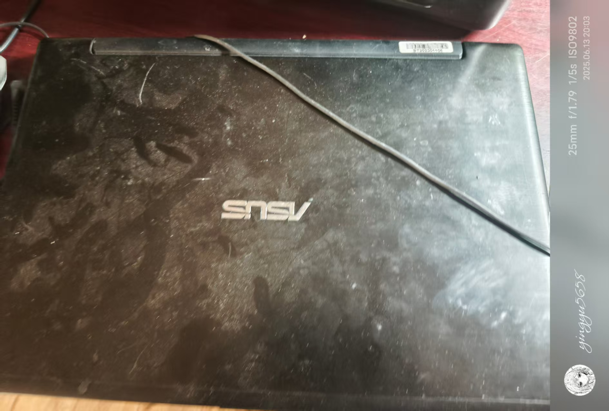
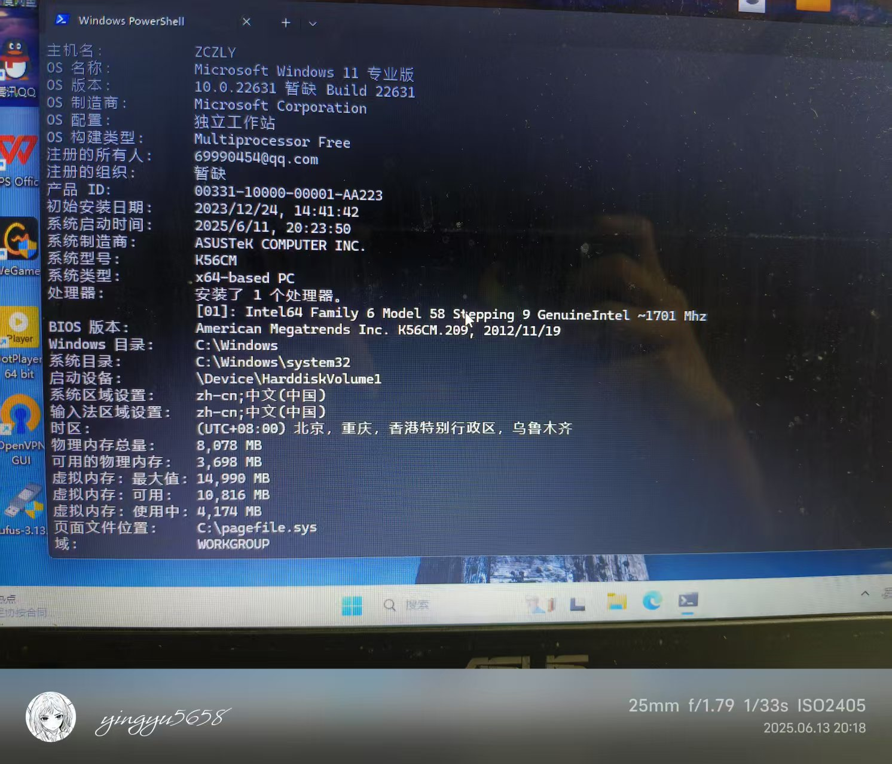
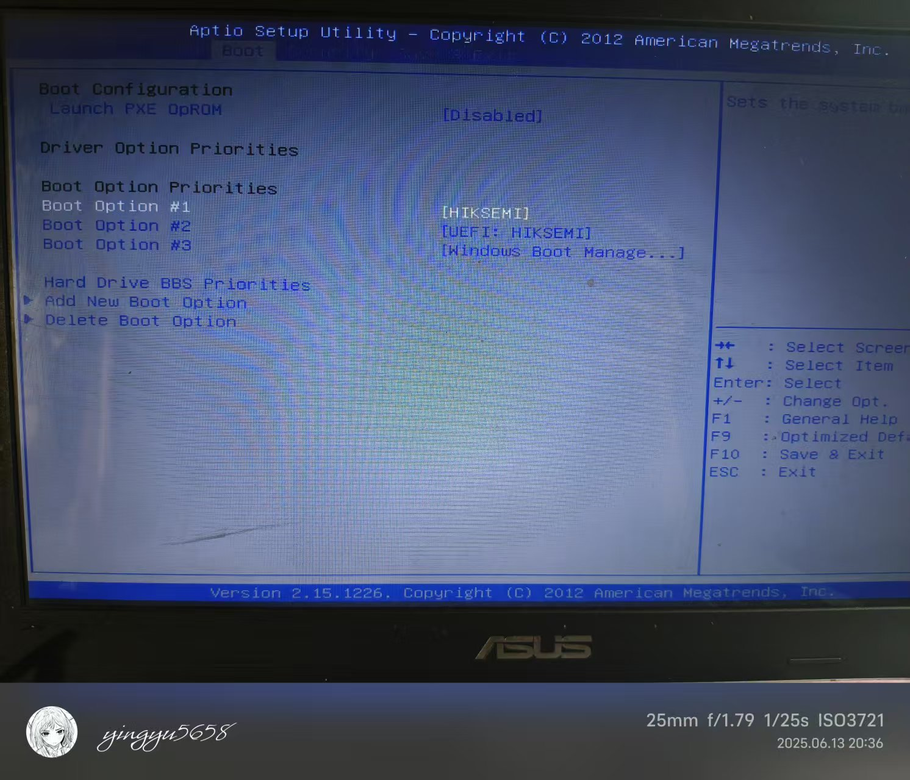
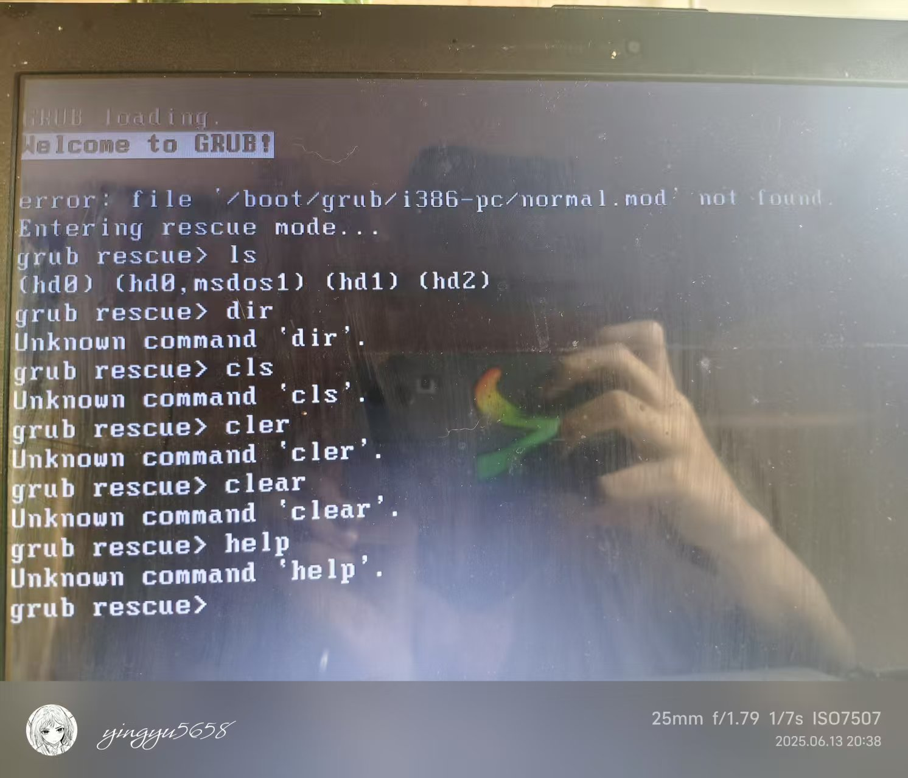
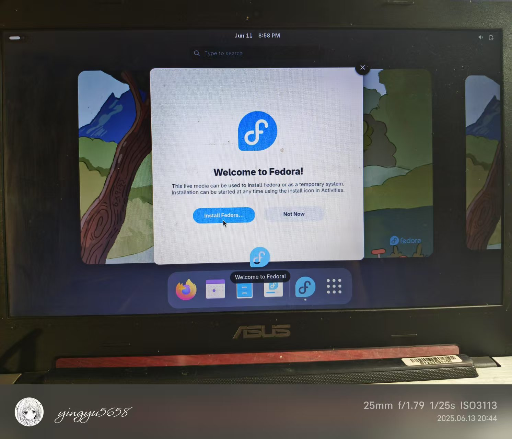
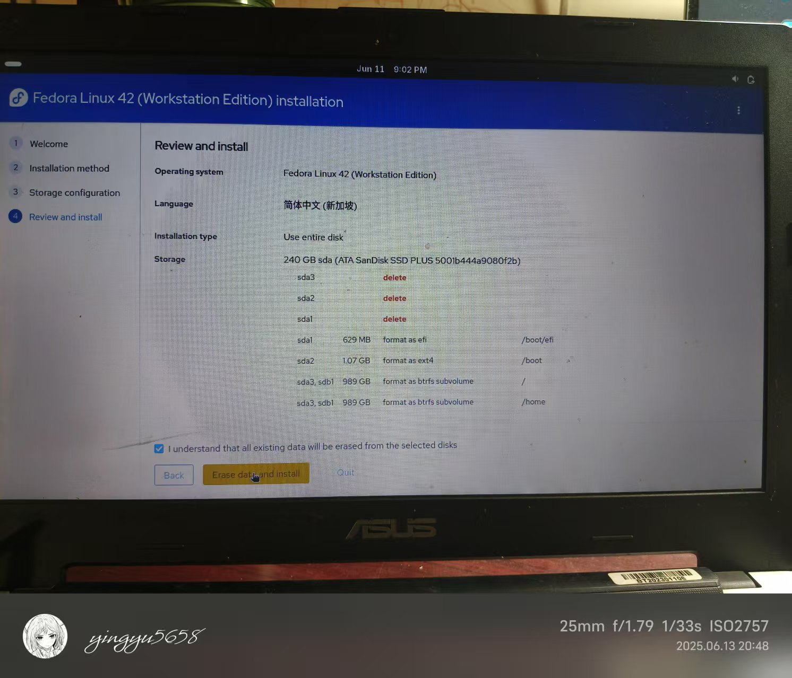
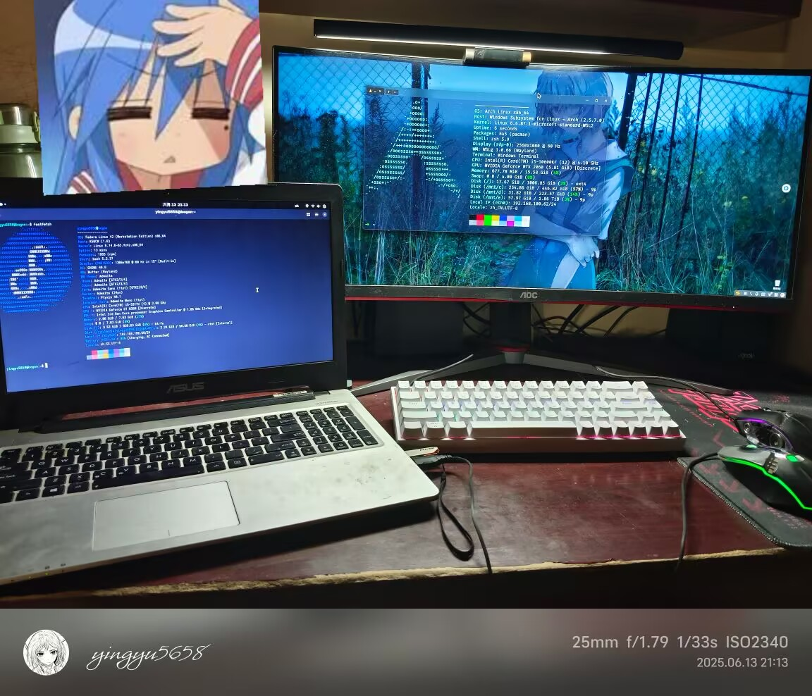

给比我岁数还大的电脑装Fedora
前言

印象中，这台电脑在我很小的时候就存在了，我爸的网盘里至今还有我当时用这台电脑播放江南Style，我在床上跳舞的视频。
这台机子开Powershell都卡，更不用说日常使用。

我甚至都不想在这台电脑上截图，当拍屏大师吧。听说Linux用户有个刻板印象就是，用着十几年前的笔记本，从来不用最新设备，那这不刚好吻合上了吗。
诶……等等，我之前好像说过不折腾了？算了，反正Fedora没有Arch那么折腾（吧）。
正文

镜像下好后，用Rufus拷到U盘。
插到电脑上，额，先让我研究一下BIOS怎么进……

把#1改成刚刚做的启动盘。保存后重启。

哎，没想到第一难在这等着我呢。引导进不去。难道是我打开方式有问题？重新进BIOS，#1设置成UEFI巴拉巴拉试试。
 诶！成了，等一阵黑屏过后就弹Fedora Logo了。
诶！成了，等一阵黑屏过后就弹Fedora Logo了。

直接端上来吧！不管三七二十八直接Install！整个安装过程还是很傻瓜式的，只要有小学英文基础点点点就好了。

虽然但是，这个简体中文怎么标的是新加坡。一顿等待后，进入系统让选择一下语言，连接个WIFI就算大功告成了。
本来以为能有什么好玩的，还真这么傻瓜啊。。。
最后再来个经典的neofetch

系统也装完了，文章也写完了，电影也下完了，爽！